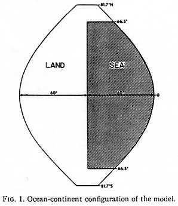

Climate Modelling
Introduction to Climate Modelling
A climate model is a large piece of code specifically designed as a long-term weather forecaster looking at decades into future.
Not all models are built the same as some can investigate several years or decades, whilst some are only made to cover a certain area.
These are called regional climate models and since they cover a much smaller area than global climate models, they can analyse “areas with complex physiographical features”.
For example, CORDEX (Coordinated Regional Climate Downscaling Experiment) is a type of framework based on the WCRP (World Climate Research Programme)
that evaluates regional climate model performances by utilising a series of tests to produce climate projections. Then multiple CORDEX RCM's are grouped together to form an ensemble,
which is referenced as domains for each region they manage, and the one I will be mainly discussing is the EURO-CORDEX, which is essentially the ensemble that
monitors over Europe's climate. Moreover, within the EURO-CORDEX, there are 55 regional climate simulations that take multiple records of the European climatology including: "temperature,
daily precipitation amount, surface solar radiation and mean sea level pressure." (2.2 The Ensemble of Simulations 2020)
One of the objectives of this ensemble is to determine the uncertainity of regional climate projections using a wide set of simulations over Europe in a high resolution.
I have chosen this on is because the ensemble include our country (United Kingdom) and I want to particularly focus that area.
The results from this CORDEX will be used in developing future plans for tackling climate change. Near the end of 2019,
the EURO-CORDEX contains 8 global climate models and 11 regional climate models. For a global climate model, I will be referencing the Community Earth System Model,
because it is one of the main GCM's used by the IPCC (Intergovernmental Panel on Climate Change), who is the main body dealing with climate change in the UN (United Nations).
Eventually, the goal for all climate models is to be able to handle multiple processes at once whilst outputting each observation at a high resolution - typically between 1 to 5 km. The most ideal climate model would be one that would:
- Record in a 1km resolution.
- Records all major processes.
- Continuous cycle of data being inputted and corrected.
- Climate predictions that range between next week and next 100 years.
- Risk Assessment.
- Measurement of uncertainty.
History of Climate Modelling

https://history.aip.org/climate/xMap69.htm
A British Scientist called Lewis Fry Richardson wrote a book called Weather Prediction by Numerical Process. 100 years ago where he would discuss how in the future,
there would be a computational system that could predict global weather. He also goes on by "describing a method of solving the mathematical equations describing air movement by
separating the planet into cells and determining the dynamical variables at the centre for each one."
I wanted to use this book to illustrate how predicting weather was done by using physics
and equations where they tried to predict a planet's rotation.
Once the first computers started being made, there was the opportunity to have these bulky machines run massive amounts of calculations to achieve the goal of predicting weather.
Then in 1969, the first “coupled” model was made by S. Manabe and K. Bryan.
"This model took an ocean model and an atmospheric model together to make it whole and was a huge milestone in scientific computing" (Nature 2006).
Now compared to modern global circulation models (also known as a global climate model), they are three-dimensional measuring longitude, latitude and height sea level. Furthermore, it is able to
capture and record ocean, atmospheric processes, ice levels etc. Overtime, the resolution has been increased as climate modelling technology has developed, which has allowed
us to a more accurate and wide capture of the region being monitored.
Issues of Climate Modelling
One issue of climate modelling is having very high resolutions. At first,
it may seem that we want to keep developing climate models to have a higher resolution,
but this will lead to higher costs to manage and store these observations.
Due to recordings being a higher resolution, they will take up more data and storage.
Another issue is when dealing with resolutions that are very high (approximately 10km area),
as it is very difficult for current models to get an accurate
recording in what is happening in that region. So, we depend on approximations in smaller grids
in order to understand what kind of physical processes are occurring. As we are using approximations,
uncertainty is a problem that can lead to errors being recorded. Whilst we are getting a "in-depth specific
view of the weather processes in a small area, it runs the risk of creating errors in the observation." (Dominic Orchard, 2023)
Biases of Climate Models
Every climate model suffers from model bias, which leads to systematic errors being produced.
An example of this is when a model might calculate the wrong number of rainy days or mismeasure
of average temperature. Even models monitoring the same region will have different climate variables
that are inputted in and climate models can display different amounts of bias. In order to reduce
the number of systematic errors, bias correction is needed and for this to be effective, we require a
set of made observations that will allow us to make an effective correction for the climate model.
The simplest approach is the Delta change method
which is based on the use of a change factor. A change
factor is the ratio between a mean value in the future and historical run.
Another approach to bias correcting,
is the (Multiple) linear regression, which is where they use the relationships of the variables in order to visualise
how strong their relationships is with each other. The other use of multiple linear regression is to find the values of
one dependent variable under the influence of independent values. This is particularly useful when dealing with climate
models as we can see fluctuations of temperature, rainfall and other factors based on other variables taken into account.
Depending on how extensive the correcting is and how much data is available, it can either be simple or complex as needed.
While bias might affect a model's credibility, it is certainly not one of the only factors that determine this.
Machine Learning Possible solution?
Machine learning has been used to analyse sub-grid models, which are essentially the smaller approximation
regions below 10km with a high resolution. They have been successful when they were trained on a high-resolution
simulation where it will output at a faster rate or even a more accurate prediction. There have been simulations
where it has been at a faster rate and more accurate.
However, this is still a developing technology and only been used for 5 to 7 years, so it still requires a lot of
rigorous testing and time to see whether machine learning will be useful in attaining a perfect climate model.
Quantum Computing in combination with Modelling
Quantum computing is particularly useless in addressing the bias issues that every climate model has. This could
result in more accurate predictions and has seen potential when combined with artifical intelligence, also known as
Quantum Artifical Intelligence. This allows quantum computers that can already perform high speed calculations at
almost perfect accuracy. Even though the potential is limitless, we still face hardware and software obstacles
which are unavailable to use right now.